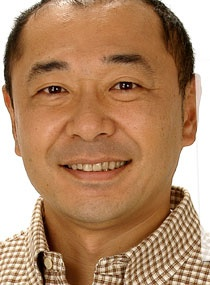
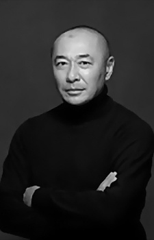

|  |
Katsumi Takahashi is a Japanese voice actor.
|
 |
|---|
| |
Kyurem | Pokemon Movie 15: Kyurem vs. The Sword of Justice | Kyurem is a legendary Pokemon from Unova region. It is a member of the Tao trio. It can fusion with Zekrom and Reshiram. Kyurem generates a powerful, freezing enemy inside itself. |